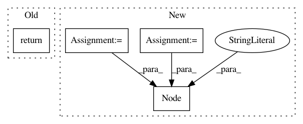

e0c9d018aca7bf05486c385484d5ed1c37bac423,pynets/diffconnectometry.py,,coreg_mask_to_diff,#Any#Any#,177
Before Change
maths = fsl.ImageMaths(in_file=out_file, op_string=args, out_file=out_file)
print("\nBinarizing custom mask...")
os.system(maths.cmdline)
return out_file
def build_coord_list(coords, dwi_dir):
from nilearn import masking
After Change
os.system(maths.cmdline)
return out_file
bin_mask = pe.Node(niu.Function(input_names=["out_file"], output_names=["out_file"],
function=bin_mask), name="bin_mask_node")
mask_transforms_wf.connect([(inputnode, flirt, [("dwi_infile", "reference"), ("mask", "in_file"),
("out_file", "out_file"), ("mat_file", "in_matrix_file")]),
(flirt, bin_mask, [("out_file", "out_file")])
In pattern: SUPERPATTERN
Frequency: 3
Non-data size: 4
Instances
Project Name: dPys/PyNets
Commit Name: e0c9d018aca7bf05486c385484d5ed1c37bac423
Time: 2018-10-13
Author: dpisner@utexas.edu
File Name: pynets/diffconnectometry.py
Class Name:
Method Name: coreg_mask_to_diff
Project Name: dPys/PyNets
Commit Name: e0c9d018aca7bf05486c385484d5ed1c37bac423
Time: 2018-10-13
Author: dpisner@utexas.edu
File Name: pynets/diffconnectometry.py
Class Name:
Method Name: coreg_WM_mask_to_diff
Project Name: idank/explainshell
Commit Name: 325d88c95defcf89e98dcf2ac9ac7d53bbea1b99
Time: 2013-09-07
Author: idankk86@gmail.com
File Name: explainshell/parser.py
Class Name: CommandLineParser
Method Name: parse_redirections